TIPOS DE CONSTELACIONES
Hay 88 constelaciones, todas de ellas diferentes y con diferentes nombres tales como: Andrómeda, Crux, Serpens, Telescopium o Tucana (estos nombres están en latín). Dentro de estas 88 están las 12 eclípticas, popularmente conocidas como “las del zodíaco”. Ellas son:
1._Constelaciones circumpolares: se pueden ver en el hemisferio norte durante todo el año, por ejemplo: Osa Mayor, Osa Menor, Jirafa o Dragón.
2._Constelaciones de primavera: se podría decir que el firmamento se expande y podemos disfrutar de más galaxias durante esta época del año, como por ejemplo: Cráter, Hydra o Leo.
3._Constelaciones de verano: la tierra está orbitando mirando hacia el interior de la vía Láctea, podremos disfrutar de: Cisne, Flecha o Caballito entre otros.
4._Constelaciones de otoño: ahora la tierra no mira hacia la vía Láctea, si no al interior del oscuro universo. Podremos ver galaxias que están increíblemente lejos, como por ejemplo: Andrómeda, Acuario o Pegaso.
5._Constelaciones de invierno: la vía Láctea está en lo más alto del cielo al anochecer y hay montones de constelaciones para observar, siempre y cuando el tiempo atmosférico nos lo permita, como: Cochero, Liebre o Géminis.
Constelaciones del hemisferio norte:
1._Constelación de Andrómeda. Representa a la princesa del mismo nombre, hija de Cefeo y Casiopea, quien según la mitología griega fue encadenada a una roca para ser devorada por Ceto, un monstruo marino, pero después rescatada por Perseo. Esta constelación, una de las más grandes conocidas, cuenta con 152 estrellas, de las cuales la más brillante es Alpheratz (alfa andromedae).
2._Constelación de Orión. Representa al máximo cazador de la Grecia Antigua, visible como un guerrero que sostiene su arma y su escudo. Dicho cazador era el protagonista de numerosos mitos griegos, en algunos de los cuales era el perseguidor de las pléyades, las hijas del titán Atlas. Esta constelación es visible tanto desde el hemisferio norte como el sur, y es reconocible por las tres estrellas cercanas que conforman su cinturón. En total, Orión consta de 204 estrellas, de las cuales Rigel (beta orionis) es la principal y más brillante.
3._Representa a Casiopea, esposa del rey de Etiopía según la mitología griega, cuya belleza y vanidad causaron la ira del dios Poseidón, quien envió un monstruo marino a azotar las costas de su reino. Esta constelación consta de 157 estrellas, de las cuales la más brillante es Tsih (gamma cassiopeiae).
4._Constelación de Perseo. Representa al héroe griego clásico del mismo nombre, responsable de decapitar a la Medusa y rescatar a Andrómeda, su futura esposa, de las fauces de un monstruo marino. En su interior se produce la famosa lluvia de meteoros de las perseidas, y consta en total de 158 estrellas, de las cuales Mirfak (alfa persei) es la más brillante.
5._Constelación del triángulo. Representa, como su nombre lo indica, un triángulo, en el que los antiguos griegos veían la letra delta (𝛥). Se trata de una constelación menor, al menos en la mitología griega, que no debe ser confundida con la constelación Triangulum australe, del hemisferio sur. En esta constelación hay tan solo 25 estrellas, de las cuales Deltotum (beta trianguli) es la principal.
6._De acuerdo a la Unión Astronómica Internacional, se reconocen formalmente 88 constelaciones. De ellas, 47 fueron identificadas y nombradas por el astrónomo y matemático griego Claudio Ptolomeo (c.100 – c.170 d. C.), quien hizo en el 150 d. C. un catálogo celeste con más de 1000 estrellas agrupadas en sus respectivas constelaciones; y 41 se agregaron posteriormente, a lo largo de los siglos XVI y XVIII, en buena parte gracias a la guiatura que ofrecían a navegantes y exploradores.
El número de constelaciones totales es fijo, pero las constelaciones observables varían dependiendo del hemisferio del planeta desde el cual se observe. De ese modo, el hemisferio norte contiene 36 constelaciones y el hemisferio sur contiene 52.
¡TIPOS DE CONSTELACIONES ZODIACALES!
nonbre
descripsion
imagen
aries
el carnero con el que viajaron Frixio y Hele, cuando salieron de su país natal para llegar a la Cólquide. Fue posteriormente el vellocino de oro.
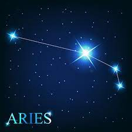
tauro
existen dos versiones:
El Toro de Creta, una bestia mítica que habitaba en aquella zona.
La forma que adoptó Zeus cuando raptó a Europa.
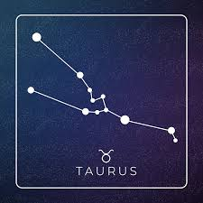
geminis
os gemelos Cástor y Pólux. Pólux era inmortal, no así su hermano Cástor. Cuando Cástor murió, Pólux ofreció su inmortalidad por salvar a su hermano.
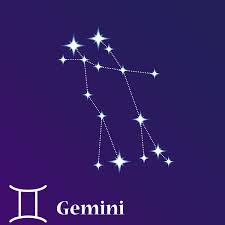
canser
el cangrejo que envió Hera a ayudar a la Hidra de Lerna, cuando ésta luchaba contra Heracles.
leo
el León de Nemea, muerto a manos de Heracles, que lo estranguló, pues su piel era impenetrable. El héroe lo despellejó con sus propias garras (lo único que podía herirlo) y se quedó la piel como su símbolo.
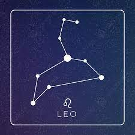
virgo
el mito es el de Astrea, hija de Zeus y Temis. Ayudó a su padre como portadora de los rayos durante la guerra con los titanes. En recompensa a su lealtad, Zeus la subió al cielo y situó entre las estrellas, dando origen a esta constelación y fin a la presencia entre los humanos de la última inmortal de la Edad Dorada.
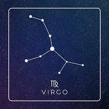
libra
se asocia a la diosa Astrea. Hasta los tiempos de Augusto, las estrellas de Libra formaban parte de las pinzas de Escorpio, pues se consideraban once signos zodiacales.13 No obstante, Libra ya era conocida por la astronomía mesopotámica como MUL Zibanu (la balanza), atributo del dios Shamash, custodio de la justicia.14
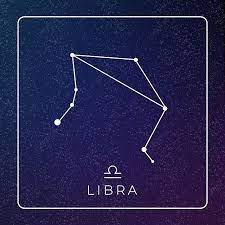
escorpion
Escorpión que la diosa Artemisa envió contra el gigante cazador Orión. Orión lo pisó y el escorpión le clavó el aguijón. Ambos murieron y Zeus puso a cada uno en frente del otro, para que no se peleasen
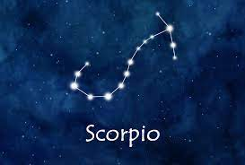
sagitario
el centauro Quirón, médico de los médicos, cansado de su condición de inmortal, decidió cambiarla por la salvación de Prometeo. Cuando el trato estuvo formalizado, Prometeo le preguntó «¿Por qué lo has hecho? Ahora que estás muerto, por mucho que te canses, no vas a poder cambiarlo...»
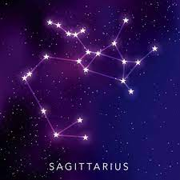
capricornio
representación de la Cabra Amaltea, la que amamantó a Zeus cuando su madre Rea lo escondió de la vista de su padre Cronos.

acuario
el joven Ganímedes, el escanciador de los dioses en el Olimpo. Un joven de extremada belleza que consiguió el amor del dios Zeus.
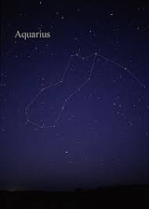
piscis
cuando los dioses huyeron del titán Tifón, muchos adoptaron formas animales. Eros y Afrodita lo hicieron en forma de peces y fueron pescados por un pescador. Otras fuentes dicen que fueron los malditos Cadmo y Harmonía los que fueron pescados
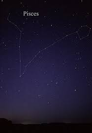
Constelaciones y signos zodiacales
Una constelación era el conjunto de estrellas que formaba el dibujo que daba nombre a la constelación (imagine las estrellas como puntos en un papel unidos con trazos). Las otras estrellas próximas se consideraban estrellas asociadas a la constelación.
La definición actual de constelación incluye todas las estrellas dentro de un área de la esfera celeste. Éstas fueron definidas hace menos de un siglo, en 1 930, por la Unión Astronómica Internacional.
Las constelaciones zodiacales son aquellas incluidas en una banda de la esfera celeste por la que pasa la eclíptica (recorrido aparente seguido por el Sol en la esfera celeste a lo largo de un año, visto desde la Tierra). Detrás de las constelaciones zodiacales están los signos zodiacales, cuyos nombres derivan del nombre de animales. Zodiaco significaba en griego rueda de animales (cuyo origen se remonta a Mesopotamia).
En torno al siglo V a.e.c. la posición de las constelación zodiacales coincidía con el signo zodiacal del mismo nombre, aunque no hay una correspondencia directa pues constelaciones y signos ocupan extensiones diferentes. Realmente, hay 13 constelaciones que pasan por la eclíptica. La decimotercera es Ofiuco y los griegos lo sabían.
La división en 12 sectores iguales probablemente tiene su origen en Mesopotamia, y se hizo así para hacerlos coincidir con sus meses.
Para establecer la posición de los signos zodiacales se toma como inicio signo de Aries (♈︎ 0º) que corresponde al punto Aries, coincidente con el equinoccio de primavera (en el hemisferio boreal).
Claudio Ptolomeo (Alejandría, s. II) recogió la tradición babilónica y de astrónomos anteriores, en particular Hiparco, posiblemente el astrónomo más influyente de la antigüedad. En su Sintaxis Matemática o Almagesto desarrolla un modelo matemático que permite calcular la posición de los planetas respecto a los signos zodiacales (que no es lo mismo que constelaciones zodiacales) que incluye la posición de algo más de 1 000 estrellas. Recientemente, en un palimpsesto se ha encontrado una descripción detallada del meteoroscopio (un tipo de esfera armilar) que utilizaba para medir las posiciones de los astros.
El catálogo de Ptolomeo contiene 48 constelaciones (las entonces visibles desde Alejandría). Para cada constelación se incluyen las estrellas que la forman, con una descripción, su posición en coordenadas eclípticas y la magnitud (luminosidad aparente). La longitud eclíptica se expresa en grados, referidos al signo zodiacal correspondiente, por ejemplo: la estrella Regulus en el Almagesto tiene por longitud: ♌︎ 2 ½, que indica que está a 2º 30’ del inicio del signo de Leo (♌︎). Una misma constelación suele estar repartida entre más de un signo.
los hemisferios;
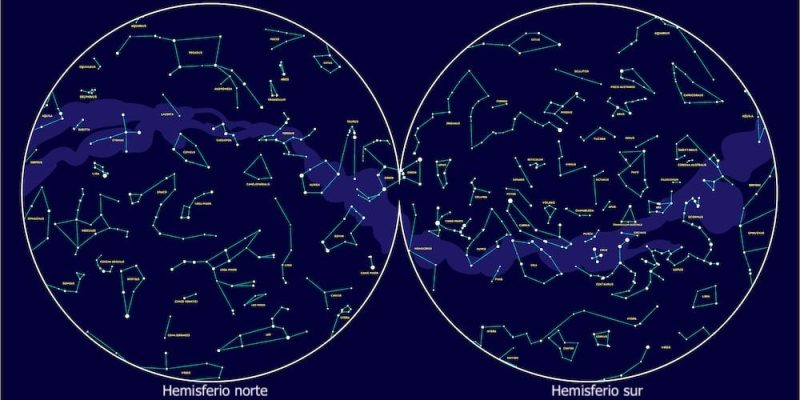 Andrómeda: Es una de las constelaciones más grandes con 722 grados cuadrados.
Aries: Constelación zodiacal. Abarca 441 grados cuadrados. No incluye ningún objeto Messier.
Casiopea: Constelación circumpolar. Muy reconocible por su forma de «W»
Orión: Es una constelación reconocida mundialmente por su forma y sus estrellas brillantes.
Perseo: Famosa por encontrarse en ella el radiante de las Perseidas.
Piscis: Constelación zodiacal. Abarca 889 grados cuadrados y el mejor mes para verla es noviembre.
Tauro: Constelación zodiacal muy característica por su forma de «V» y el cúmulo de las Híades.
Triángulo: Pequeña constelación que abarca 131 grados cuadrados.
Auriga: Forma un pentágono de estrellas brillantes muy reconocibles. Abarca 3 objetos Messier.
Camelopardalis: o Jirafa, abarca 757 grados cuadrados.
Cáncer: Constelación zodiacal con una característica forma de cangrejo.
Can Menor: Abarca 183 grados cuadrados y 19 objetos NGC.
Géminis: Constelación zodiacal. Abarca 513 grados cuadrados y 1 objeto Messier así como 67 NGC.
Leo: Constelación zodiacal muy reconocible y de las más grandes por sus galaxias.
Leo Menor: Una de las más pequeñas, introducida por Johannes Hevelius en 1687.
Lince: Una de las más complicadas de observar porque es muy débil.
Monoceros: o Unicornio. Abarca 481 grados cuadrados, 1 objeto Messier y 58 NGC.
Osa Mayor: Constelación circumpolar muy reconocible que nos ayuda a encontrar el norte.
Boyero: o Bootes incluye a la estrella Arturo, una de las más brillantes del cielo.
Perros de caza: o Canes Venatici es una constelación mediana que abarca 5 objetos Messier.
Coma Berenices: Es una constelación poco vistosa pero que abarca 8 objetos Messier y 329 NGC.
Corona Boreal: Una pequeña constelación pero fácilmente identificable en el cielo.
Dragón: Constelación circumpolar muy extensa aunque sin estrellas especialmente brillantes.
Hércules: Una constelación muy extensa que aloja el famoso cúmulo del mismo nombre.
Serpens: Está dividida en dos partes, Serpens Caput y Serpens Cauda.
Osa Menor: Constelación circumpolar que aloja la estrella Polaris.
Águila: Una constelación típica de las noches de verano en la que destaca su estrella Altair.
Cefeo: Constelación circumpolar que aloja multitud de nebulosas oscuras.
Cisne: Una extensa constelación que atraviesa la Vía Láctea en las noches de verano.
Delfín: Pequeña constelación situada dentro del asterismo del Triángulo de Verano.
Equuleus: o caballo es la constelación más pequeña del hemisferio norte.
Lacerta: o lagarto es también una constelación pequeña y difícil de reconocer.
Lira: Destaca en el cielo por su brillante estrella Vega y su famosísima Épsilon Lirae.
Pegaso: Muy reconocible por su famoso «cuadrado» junto a Andrómeda.
Flecha: Pequeña pero fácilmente identificable dentro del Triángulo de Verano.
Vulpécula: o Zorra es también otra pequeña constelación con estrellas poco brillantes.
3._Representa a Casiopea, esposa del rey de Etiopía según la mitología griega, cuya belleza y vanidad causaron la ira del dios Poseidón, quien envió un monstruo marino a azotar las costas de su reino. Esta constelación consta de 157 estrellas, de las cuales la más brillante es Tsih (gamma cassiopeiae).
4._Constelación de Perseo. Representa al héroe griego clásico del mismo nombre, responsable de decapitar a la Medusa y rescatar a Andrómeda, su futura esposa, de las fauces de un monstruo marino. En su interior se produce la famosa lluvia de meteoros de las perseidas, y consta en total de 158 estrellas, de las cuales Mirfak (alfa persei) es la más brillante.
5._Constelación del triángulo. Representa, como su nombre lo indica, un triángulo, en el que los antiguos griegos veían la letra delta (𝛥). Se trata de una constelación menor, al menos en la mitología griega, que no debe ser confundida con la constelación Triangulum australe, del hemisferio sur. En esta constelación hay tan solo 25 estrellas, de las cuales Deltotum (beta trianguli) es la principal.
6._De acuerdo a la Unión Astronómica Internacional, se reconocen formalmente 88 constelaciones. De ellas, 47 fueron identificadas y nombradas por el astrónomo y matemático griego Claudio Ptolomeo (c.100 – c.170 d. C.), quien hizo en el 150 d. C. un catálogo celeste con más de 1000 estrellas agrupadas en sus respectivas constelaciones; y 41 se agregaron posteriormente, a lo largo de los siglos XVI y XVIII, en buena parte gracias a la guiatura que ofrecían a navegantes y exploradores. El número de constelaciones totales es fijo, pero las constelaciones observables varían dependiendo del hemisferio del planeta desde el cual se observe. De ese modo, el hemisferio norte contiene 36 constelaciones y el hemisferio sur contiene 52.
¡TIPOS DE CONSTELACIONES ZODIACALES!
| nonbre | descripsion | imagen |
|---|---|---|
| aries | el carnero con el que viajaron Frixio y Hele, cuando salieron de su país natal para llegar a la Cólquide. Fue posteriormente el vellocino de oro. | 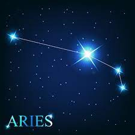 |
| tauro | existen dos versiones: El Toro de Creta, una bestia mítica que habitaba en aquella zona. La forma que adoptó Zeus cuando raptó a Europa. | 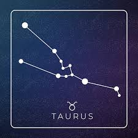 |
| geminis | os gemelos Cástor y Pólux. Pólux era inmortal, no así su hermano Cástor. Cuando Cástor murió, Pólux ofreció su inmortalidad por salvar a su hermano. | 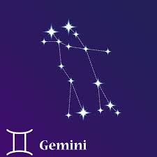 |
| canser | el cangrejo que envió Hera a ayudar a la Hidra de Lerna, cuando ésta luchaba contra Heracles. | |
| leo | el León de Nemea, muerto a manos de Heracles, que lo estranguló, pues su piel era impenetrable. El héroe lo despellejó con sus propias garras (lo único que podía herirlo) y se quedó la piel como su símbolo. | 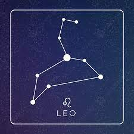 |
| virgo | el mito es el de Astrea, hija de Zeus y Temis. Ayudó a su padre como portadora de los rayos durante la guerra con los titanes. En recompensa a su lealtad, Zeus la subió al cielo y situó entre las estrellas, dando origen a esta constelación y fin a la presencia entre los humanos de la última inmortal de la Edad Dorada. | 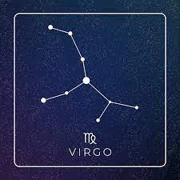 |
| libra | se asocia a la diosa Astrea. Hasta los tiempos de Augusto, las estrellas de Libra formaban parte de las pinzas de Escorpio, pues se consideraban once signos zodiacales.13 No obstante, Libra ya era conocida por la astronomía mesopotámica como MUL Zibanu (la balanza), atributo del dios Shamash, custodio de la justicia.14 | 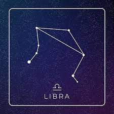 |
| escorpion | Escorpión que la diosa Artemisa envió contra el gigante cazador Orión. Orión lo pisó y el escorpión le clavó el aguijón. Ambos murieron y Zeus puso a cada uno en frente del otro, para que no se peleasen | 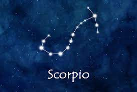 |
| sagitario | el centauro Quirón, médico de los médicos, cansado de su condición de inmortal, decidió cambiarla por la salvación de Prometeo. Cuando el trato estuvo formalizado, Prometeo le preguntó «¿Por qué lo has hecho? Ahora que estás muerto, por mucho que te canses, no vas a poder cambiarlo...» | 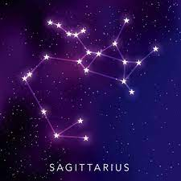 |
| capricornio | representación de la Cabra Amaltea, la que amamantó a Zeus cuando su madre Rea lo escondió de la vista de su padre Cronos. |
|
| acuario | el joven Ganímedes, el escanciador de los dioses en el Olimpo. Un joven de extremada belleza que consiguió el amor del dios Zeus. | 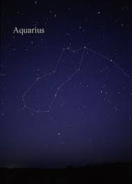 |
| piscis | cuando los dioses huyeron del titán Tifón, muchos adoptaron formas animales. Eros y Afrodita lo hicieron en forma de peces y fueron pescados por un pescador. Otras fuentes dicen que fueron los malditos Cadmo y Harmonía los que fueron pescados | 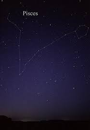 |